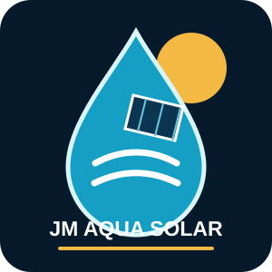

Solar Water Pumps
Supply and installation of efficient solar-powered water pump systems.

JM AQUA SOLARWATER SYSTEMS & INSTALLATIONSSMART WATER. SOLAR POWER.
Practical, dependable solar-powered water systems for homes, farms and businesses across Limpopo.
GET A QUOTEWATER MADE SIMPLE
JM Aqua Solar supplies and installs solar-powered water solutions designed around your needs. From pumping and storage to filtration and irrigation, we help you get dependable water without relying on grid electricity.
WHAT WE DO
Supply and installation of efficient solar-powered water pump systems.
Solar-powered pumping and practical water storage tank installations.
Water filtration solutions to help improve your water quality.
Installation of solar borehole pumps. Borehole drilling is not offered.
Solar-powered irrigation systems for gardens, smallholdings and farms.
Solar-powered water pressure solutions for a more reliable flow.
WHY JM AQUA SOLAR
We focus on solar-powered water systems that make sense for your property and daily needs. Our goal is straightforward: dependable installations, practical solutions and service you can reach.
PROUDLY SERVING LIMPOPO
LET’S GET YOUR WATER FLOWING
Contact us on WhatsApp or give us a call to discuss your solar water system.